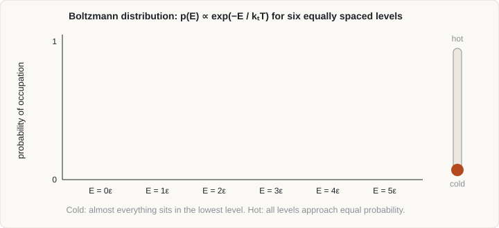

Curriculum/PhysicsPHYS 301
Statistical mechanics for simulation
A simulation follows a few thousand atoms; a material has 1023. Statistical mechanics is the bridge: it says which averages over the small system reproduce the temperature, pressure, free energy and transport coefficients of the large one.
- Reading time
- about 12 min
- Level
- Year 3: advanced theory
- Distinguish microstates from macrostates and time averages from ensemble averages.
- State the main ensembles, their fixed variables and their thermodynamic potentials.
- Write and use the Boltzmann distribution and the canonical partition function.
- Explain why free-energy differences are harder to compute than energies, and name the main methods.
- Estimate the statistical uncertainty of a simulated average.
1. From atoms to properties#
A microstate is a complete specification of the system at the atomic level: all positions and momenta for a classical system, or a full quantum state. A macrostate is what an experiment sees: a few variables such as temperature T, pressure p, volume V, number of atoms N and composition. Enormously many microstates correspond to one macrostate, and the macroscopic property is the average of the microscopic quantity over those microstates, weighted by how probable each is.
For N classical atoms the microstate is a point in phase space of 6N dimensions, (r1, …, rN, p1, …, pN). The total energy as a function of that point is the Hamiltonian,
H(r, p) = Σi |pi|² / 2mi + U(r1, …, rN)Two kinds of average appear in simulation. An ensemble average ⟨A⟩ weights every phase-space point by its probability. A time average follows one trajectory and averages over time. Molecular dynamics produces time averages; Monte Carlo produces samples that estimate ensemble averages directly. The two agree if the system is ergodic (Section 8).
2. Ensembles#
An ensemble is the set of microstates consistent with a set of fixed macroscopic conditions. Which one to use depends on what the experiment holds constant and what the algorithm can impose.
| Ensemble | Fixed | Fluctuates | Potential that is minimised at equilibrium | Typical use |
|---|---|---|---|---|
| Microcanonical (NVE) | N, V, E | T, p | Entropy S is maximised (S = kB ln Ω) | Plain MD without a thermostat; testing energy conservation |
| Canonical (NVT) | N, V, T | E, p | Helmholtz free energy F = U − TS | Properties at fixed volume; Monte Carlo |
| Isothermal–isobaric (NPT) | N, p, T | E, V | Gibbs free energy G = H − TS | Matching laboratory conditions; thermal expansion; phase stability |
| Grand canonical (μVT) | μ, V, T | E, N | Grand potential Ω = F − μN | Adsorption, segregation, chemical equilibrium with a reservoir |
In the thermodynamic limit (large N) the ensembles give the same averages. Fluctuations of an extensive quantity scale as 1/√N relative to its mean, so they are tiny for a macroscopic sample but visible in a box of a few hundred atoms, and they differ between ensembles. A well-posed simulation states which ensemble it samples.
3. The Boltzmann distribution#
For a system in contact with a heat bath at temperature T (canonical ensemble), the probability of finding it in a microstate of energy Ei is
pi = exp(−Ei / kBT) / Z, Z = Σi exp(−Ei / kBT)This single formula underlies Metropolis Monte Carlo, thermostatted molecular dynamics, transition-state theory and the equilibrium populations of defects and phases. Lower-energy states are more probable, but the number of states at each energy (the degeneracy) also counts: a high-energy level with many states can hold more total probability than a low-energy level with few. The balance between these two effects is the balance between energy and entropy.

This interactive demo needs JavaScript to run.
4. Partition function and examples#
The partition function Z is the sum above, and it generates the thermodynamics. With β = 1/kBT:
F = −kBT ln Z, ⟨E⟩ = −∂(ln Z)/∂β, S = −∂F/∂T, p = −∂F/∂VIf Z can be computed, everything follows. It can be computed exactly only for simple models, which are nevertheless the building blocks of larger ones.
Two-level system
A defect with ground state at 0 and an excited state at ε has Z = 1 + exp(−ε/kBT). The excited fraction is exp(−ε/kBT)/Z, which at low temperature gives the Arrhenius form used for equilibrium vacancy concentration.
Harmonic oscillator and equipartition
For one classical oscillator Z ∝ kBT/(ℏω), giving mean energy kBT: equipartition assigns ½kBT to every quadratic term in the Hamiltonian. A solid of N atoms has 3N oscillators and so heat capacity 3NkB (3R ≈ 24.9 J mol−1 K−1, the Dulong–Petit value). This is why classical simulations give a constant heat capacity at all temperatures, while real solids drop below it at low temperature because quantum oscillators with ℏω > kBT are frozen out. Classical MD is therefore reliable only when T is comparable to or above the Debye temperature of the material, or when quantum corrections are applied.
Kinetic temperature
Equipartition also defines the temperature seen in an MD run:
⟨K⟩ = ½ Nf kBT, Nf = 3N − 3 (for fixed total momentum; subtract further constraints)The instantaneous kinetic temperature fluctuates by a relative amount of order √(2/Nf) in a small box, so a reading of a few percent away from the target in a 200-atom cell is normal, not an error.
5. Free energy and entropy#
Phase stability, defect concentrations, solubility, nucleation barriers and reaction equilibria are governed by free energies, not energies. Free energies are harder to compute because they depend on the volume of phase space accessible, not just on averages of observables. In a simulation, regions of high entropy are visited often and are easy to see, but the free energy needs the absolute probability, which is ln Z, and Z is not an average of anything that is directly sampled.
Contributions to the entropy of a material include vibrational (the main finite-temperature term in most solids), configurational (arrangement of atoms or vacancies on a lattice), electronic (important in metals) and magnetic (important in iron and its alloys, where it changes the relative stability of bcc and fcc). Neglecting the right one is a common reason that a 0 K energy ranking fails at the temperature of interest.
Methods for free-energy differences
- Harmonic and quasi-harmonic approximation. The vibrational free energy of a crystal from its phonon frequencies ωi: Fvib = Σi [½ℏωi + kBT ln(1 − exp(−ℏωi/kBT))]. The quasi-harmonic version lets frequencies depend on volume, capturing thermal expansion. It fails when anharmonicity is strong.
- Thermodynamic integration. Switch the Hamiltonian from a reference H0 to the target H1 through a coupling parameter λ, and integrate: ΔF = ∫01 ⟨∂H/∂λ⟩λ dλ. With an Einstein crystal as reference this is the Frenkel–Ladd method for absolute free energies of solids; melting points follow from equating solid and liquid free energies.
- Free-energy perturbation. ΔF = −kBT ln⟨exp(−ΔU/kBT)⟩0, accurate only when the two states overlap strongly.
- Umbrella sampling and metadynamics. To obtain a free-energy profile along a coordinate (for example the distance an atom moves, or a nucleation order parameter), bias the simulation so that it samples barriers and then remove the bias. Both rely on a good choice of coordinate.
- Coexistence methods. Simulate two phases in one box and watch the interface move or stay still; the temperature at which it is stationary is the transition temperature.
6. Properties from fluctuations#
Response functions are determined by fluctuations of the corresponding quantities at equilibrium. For example in the canonical ensemble,
CV = ( ⟨E²⟩ − ⟨E⟩² ) / (kB T²)and in the isothermal–isobaric ensemble the isothermal compressibility follows from the variance of the volume, κT = (⟨V²⟩ − ⟨V⟩²)/(kBT⟨V⟩). Thermal expansion comes from the cross-fluctuation of enthalpy and volume, and elastic constants from stress fluctuations. These formulae let one run produce several properties, but they converge slowly because they are variances; direct perturbation (apply a small strain and measure the response) is often more efficient.
7. Correlation functions and transport#
Structure. The radial distribution function g(r) is the probability, relative to a uniform gas, of finding an atom a distance r from another. Crystals give sharp peaks, liquids give damped oscillations that decay to 1, and amorphous solids lie between. Its Fourier transform is the structure factor S(q), directly comparable with diffraction. The coordination number is the integral of 4πr²ρg(r) up to the first minimum.
Dynamics. Time-correlation functions measure how quickly the system forgets a state. Transport coefficients follow from them. The diffusion coefficient has two equivalent forms:
Einstein: D = limt→∞ ⟨|r(t) − r(0)|²⟩ / (6t) Green–Kubo: D = (1/3) ∫0∞ ⟨v(0)·v(t)⟩ dtThe mean-squared displacement (MSD) must be computed from unwrapped coordinates, and the slope fitted only in the linear (diffusive) regime, not the early ballistic regime where MSD ∝ t². Viscosity and thermal conductivity have analogous Green–Kubo expressions (from stress and heat-current correlations), and these converge slowly.
8. Ergodicity and sampling#
A system is ergodic if, given enough time, a trajectory visits all accessible regions of phase space in proportion to their probability. Then the time average equals the ensemble average. Real simulations are finite, and several situations break this in practice:
- Rare events. A system with an energy barrier much larger than kBT can sit in one basin for longer than the run, so the average describes only that basin. With a typical attempt frequency of 1013 s−1, an atomic hop over a 1 eV barrier at 300 K occurs about once every 104 seconds (hours), compared with MD runs of nanoseconds, a gap of some thirteen orders of magnitude.
- Metastability and hysteresis. Heating and cooling runs through a phase transition give different answers because nucleation is slow.
- Glassy dynamics. Structural relaxation is much slower than the simulated time.
Remedies are: run longer; start from several independent configurations and compare; use methods that sample differently (Monte Carlo with swap moves, replica exchange, which exchanges configurations between temperatures; metadynamics; accelerated dynamics); or use kinetic methods that model rare events explicitly (see the Monte Carlo page).
9. Statistical error#
A simulated average is an estimate with an uncertainty, and a number without an error bar is incomplete. Successive configurations in an MD or MC run are correlated, so the number of independent samples is much smaller than the number of recorded frames. For M frames with correlation time τ (in units of the sampling interval), the standard error of the mean is approximately
σmean ≈ σ √( 2τ / M )where σ is the standard deviation of the quantity. Practical ways to get it:
- Block averaging. Divide the series into blocks longer than the correlation time, average each block and compute the error from the block means. Increase the block length until the estimated error stops growing.
- Independent replicas. Repeat with different random seeds or initial velocities; the spread of results is the error.
- Discard the equilibration period. The start of a run depends on the initial configuration; plot the property against time and start averaging only after it has stopped drifting.
Systematic errors (a poor potential, finite box, neglected quantum effects) are not reduced by longer runs and are usually larger than the statistical error. Report both kinds.
- The Boltzmann distribution, p proportional to exp(-E/kT), underlies Metropolis Monte Carlo, thermostats and equilibrium defect concentrations.
- Pick the ensemble that matches what is held fixed: NVE, NVT, NPT or the grand canonical.
- Free energies, not energies, decide stability, and they need dedicated methods: thermodynamic integration, perturbation, umbrella sampling, the quasi-harmonic approximation.
- Classical simulation assumes equipartition, so it overestimates heat capacity when quantum modes are frozen out at low temperature.
- Quote averages with error bars. The correlation time sets the number of independent samples, and ergodicity is never guaranteed.
10. Check your understanding#
At what temperature is the excited state of a two-level defect with ε = 1 eV populated at 1%?
Solve exp(−ε/kBT)/(1 + exp(−ε/kBT)) = 0.01, which gives ε/kBT ≈ 4.6, so T ≈ 11 600 K / 4.6 ≈ 2 500 K (using 1 eV/kB ≈ 11 600 K). Even at high temperature the excited state stays rare for such a large gap.
Why does classical MD overestimate the heat capacity of a solid at low temperature?
Classical equipartition gives each oscillator energy kBT at every temperature, so CV = 3NkB. In a real solid, modes with ℏω larger than kBT are not excited, so CV falls below this value as the temperature drops.
A run of 106 frames has a correlation time of 103 frames. About how many independent samples is that?
Roughly M/(2τ) = 106/(2×103) = 500 independent samples, so the standard error is about σ/√500, not σ/√106.
11. References and further reading#
- Chandler, D., Introduction to Modern Statistical Mechanics, Oxford University Press.
- McQuarrie, D. A., Statistical Mechanics, University Science Books.
- Tuckerman, M. E., Statistical Mechanics: Theory and Molecular Simulation, Oxford University Press.
- Frenkel, D. and Smit, B., Understanding Molecular Simulation, Academic Press (free energies, ensembles, error analysis).
- Frenkel, D. and Ladd, A. J. C., New Monte Carlo method to compute the free energy of arbitrary solids, J. Chem. Phys. 81, 3188 (1984).
- Flyvbjerg, H. and Petersen, H. G., Error estimates on averages of correlated data, J. Chem. Phys. 91, 461 (1989).
- Laio, A. and Parrinello, M., Escaping free-energy minima, Proc. Natl. Acad. Sci. USA 99, 12562 (2002).